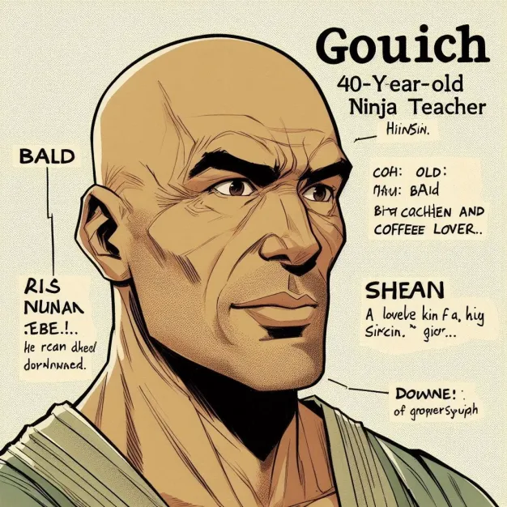

Gouaich, le shinobi aux 1000 pauses
Gouaich est un ninja d’apparence calme et impassible, toujours en quête du timing parfait. Spécialisé dans la programmation en C et véritable expert des pauses café, il a élevé l’art de prendre du recul à un niveau supérieur. Avec ses cheveux très courts et son visage imperturbable, il ressemble étrangement à Saitama, ce qui renforce encore son aura de sérénité et d’efficacité.
Connaisseur averti en programmation de jeux vidéo, Gouaich est capable de créer des mondes interactifs aussi facilement qu’il sirote un espresso bien serré. On raconte qu’il a vu One Piece Red, mais ses critiques sur le film restent aussi sobres que lui : il préfère coder en silence que s’étendre sur des débats d’otaku.
Toujours posé, toujours précis, Gouaich incarne l’équilibre parfait entre maîtrise technique et zen attitude, un ninja qui ne frappe jamais en vain, que ce soit sur un clavier ou au cœur d’une discussion passionnée.
